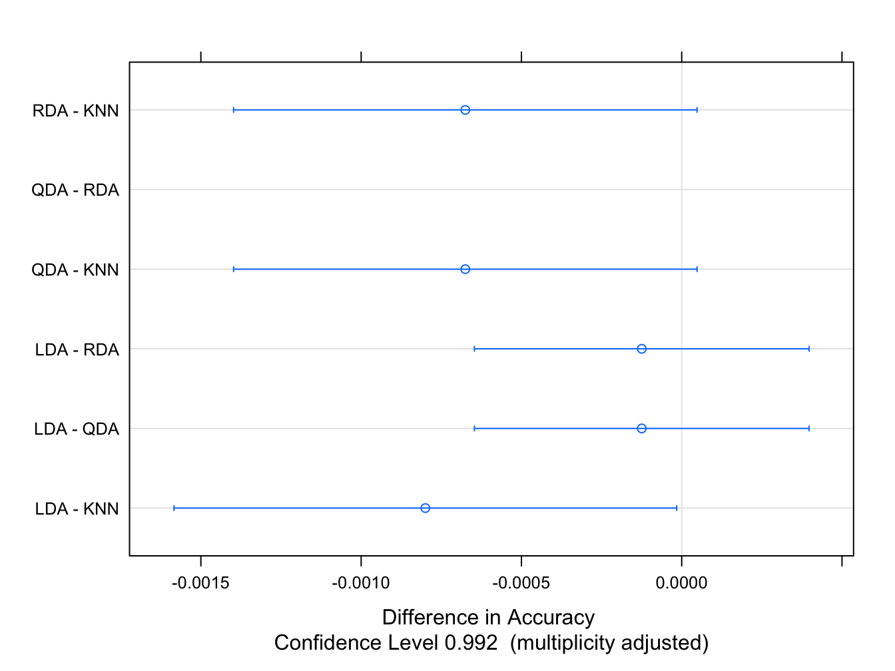

4.1 Comparando según Accuracy
Empezamos comparando los modelos ajustados en la Sección 3. Vamos a usar los mismos datos de entrenamiento para cada modelo, y además “plantaremos una semilla” para que el remuestreo se haga en los mismos conjuntos.
library(caret)
library(ISLR)
df <- Default[, c("income", "balance", "default")]
set.seed(123)
train.ID <- createDataPartition(df$default, p = 0.8, list = FALSE)
train_df <- df[train.ID, ]
test_df <- df[-train.ID, ]
# definimos como control una validación cruzada con 10 hojas y repeticiones
fit_control <- trainControl(method='repeatedcv', number = 10, repeats = 5)LDA:
# LDA
set.seed(321)
model_lda_def <- train(default ~.,
data = train_df,
method = "lda",
trControl = fit_control)QDA:
# QDA
set.seed(321)
model_qda_def <- train(default ~.,
data = train_df,
method = "qda",
trControl = fit_control)RDA:
# RDA
mi.grid <- data.frame(lambda = c(0) ,
gamma = c(0))
set.seed(321)
model_rda_def <- train(default ~.,
data = train_df,
method = "rda",
tuneGrid = mi.grid,
trControl = fit_control)Agregamos también un KNN:
set.seed(321)
model_knn_def <- train(default ~.,
data = train_df,
method = "knn",
trControl = fit_control,
preProcess = c("center", "scale"),
tuneLength = 5)Ahora, usamos la función resamples para agrupar todos los resultados calculados de cada modelo:
resamps <- resamples(list(LDA = model_lda_def,
QDA = model_qda_def,
RDA = model_rda_def,
KNN = model_knn_def))
resamps##
## Call:
## resamples.default(x = list(LDA = model_lda_def, QDA = model_qda_def, RDA
## = model_rda_def, KNN = model_knn_def))
##
## Models: LDA, QDA, RDA, KNN
## Number of resamples: 50
## Performance metrics: Accuracy, Kappa
## Time estimates for: everything, final model fit##
## Call:
## summary.resamples(object = resamps)
##
## Models: LDA, QDA, RDA, KNN
## Number of resamples: 50
##
## Accuracy
## Min. 1st Qu. Median Mean 3rd Qu. Max. NA's
## LDA 0.9650437 0.9712140 0.9737500 0.9732539 0.9750234 0.9800250 0
## QDA 0.9650437 0.9712230 0.9725172 0.9733785 0.9762426 0.9800250 0
## RDA 0.9650437 0.9712230 0.9725172 0.9733785 0.9762426 0.9800250 0
## KNN 0.9675000 0.9712859 0.9737828 0.9740536 0.9762500 0.9825218 0
##
## Kappa
## Min. 1st Qu. Median Mean 3rd Qu. Max. NA's
## LDA 0.1274436 0.2932769 0.3612833 0.3694266 0.4450344 0.5755961 0
## QDA 0.1648794 0.3059514 0.3966133 0.3950321 0.4595555 0.5944787 0
## RDA 0.1648794 0.3059514 0.3966133 0.3950321 0.4595555 0.5944787 0
## KNN 0.2653811 0.3977481 0.4629179 0.4570037 0.5016312 0.6422322 0
Los 4 métodos se comportan de forma similar en términos de precisión. Como se ha fijado una semilla y todos los subconjuntos donde se han ajustado los modelos son iguales, es posible hacer inferencias sobre las diferencias entre modelos. Vamos a calcular las diferencias (2 a 2) y luego hacer un t-test bajo la hipótesis nula de que no hay diferencias entre modelos.
##
## Call:
## diff.resamples(x = resamps)
##
## Models: LDA, QDA, RDA, KNN
## Metrics: Accuracy, Kappa
## Number of differences: 6
## p-value adjustment: bonferroni##
## Call:
## summary.diff.resamples(object = difValues)
##
## p-value adjustment: bonferroni
## Upper diagonal: estimates of the difference
## Lower diagonal: p-value for H0: difference = 0
##
## Accuracy
## LDA QDA RDA KNN
## LDA -0.0001247 -0.0001247 -0.0007997
## QDA 1.00000 0.0000000 -0.0006750
## RDA 1.00000 NA -0.0006750
## KNN 0.03606 0.06672 0.06672
##
## Kappa
## LDA QDA RDA KNN
## LDA -0.02561 -0.02561 -0.08758
## QDA 0.0001052 0.00000 -0.06197
## RDA 0.0001052 NA -0.06197
## KNN 1.406e-13 8.481e-11 8.481e-11Los resultados indican lo que sospechábamos: no hay diferencias significativas entre los modelos, salvo tal vez entre LDA y KNN (p-valor \(> 0.05\)). En estos casos, hacer un diagrama con los intervalos de confianza es muy ilustrativo.

Solo el intervalo de confianza para la diferencia entre LDA y KNN no contiene al cero, por tanto, hay diferencias significativas para el nivel de confianza fijado.